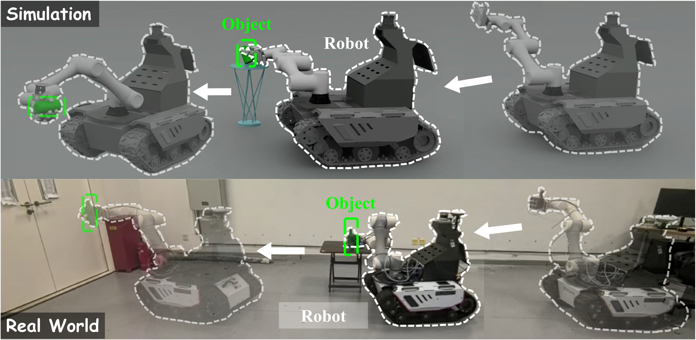
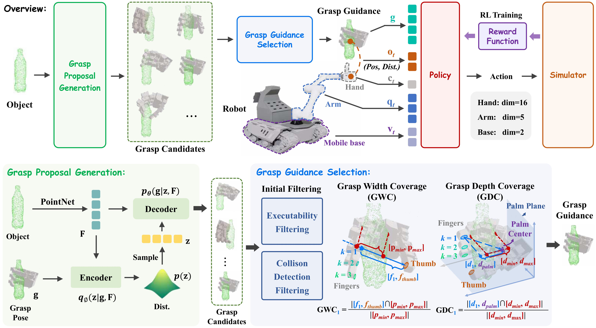

Fast grasping is critical for mobile robots in logistics, manufacturing, and service applications. Existing methods face fundamental challenges in impact stabilization under high-speed motion, real-time whole-body coordination, and generalization across diverse objects and scenarios, limited by fixed bases, simple grippers, or slow tactile response capabilities. We propose FastGrasp, a learning-based framework that integrates grasp guidance, whole-body control, and tactile feedback for mobile fast grasping. Our two-stage reinforcement learning strategy first generates diverse grasp candidates via conditional variational autoencoder conditioned on object point clouds, then executes coordinated movements of mobile base, arm, and hand guided by optimal grasp selection. Tactile sensing enables real-time grasp adjustments to handle impact effects and object variations. Extensive experiments demonstrate superior grasping performance in both simulation and real-world scenarios, achieving robust manipulation across diverse object geometries through effective sim-to-real transfer.

FastGrasp adopts a two-stage strategy to achieve fast dexterous grasping for mobile manipulators: in the first stage, a conditional variational autoencoder (CVAE) conditioned on object point clouds generates diverse grasp candidates, and the optimal grasp guidance is selected based on hand envelopment metrics (GWC and GDC); in the second stage, this grasp guidance, together with real-time tactile feedback, is used to train a whole-body control policy via reinforcement learning (PPO), coordinating the mobile base, robotic arm, and dexterous hand to achieve stable grasping under high-speed motion while adapting to objects of varying shapes.
